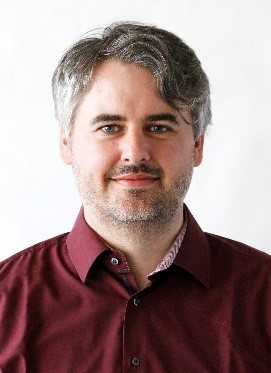
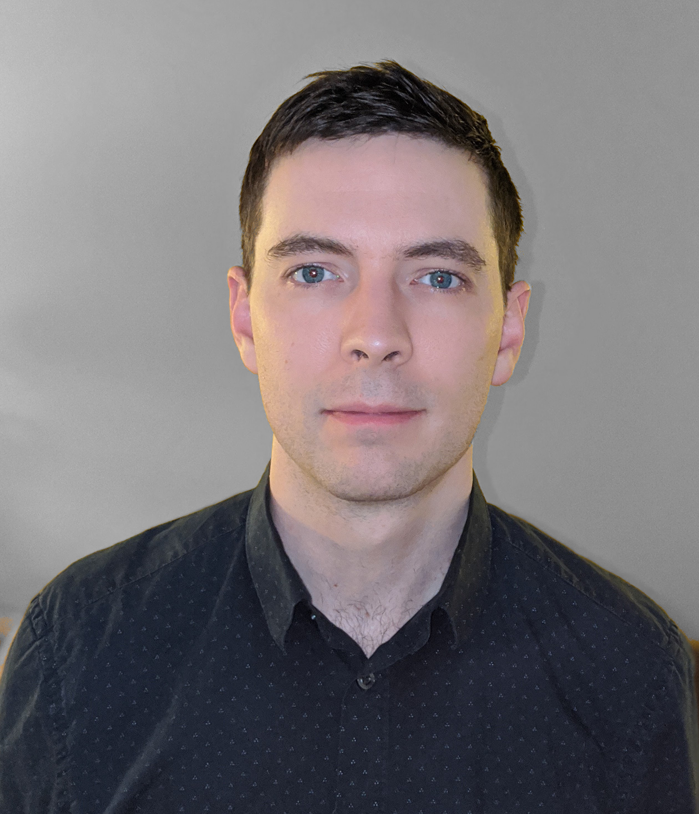

Panelists
Dr. Stephan Menzel
Forschungszentrum Juelich

Stephan Menzel received his PhD degree (summa cum laude) from the RWTH Aachen University in 2012. Since 2012, he has been at the Peter Grünberg Institut (PGI-7) at Forschungszentrum Juelich GmbH as senior scienticst. He is now the head of the simulation group at the PGI-7, Forschungszentrum Juelich. His group developed simulation tools for resistive switching devices which are commonly available (www.emrl.de/Jart.html). He is associate editor of Scientific Reports (2015-), editor of MDPI Materials (2020-), editor of IEEE Journal of the Electron Device Society (2020-), and Frontiers in Neuroscience (2021-). He is member of the IEEE since 2012 and member of the EDS and CAS society.
His research interests include the physics, characterization, modeling, and simulation of resistive switching (memristive) devices and computing-in-memory and neuromorphic computing circuits exploiting memristive devices. Stephan Menzel co-authored overall more than 100 papers counting more than 2,500 citations, 8 book chapters and gave 25 invited talks.
For more information, please see his webpage at http://www.emrl.de/JART.html
Dr. Patrick Sheridan
Micron Advanced Memory Systems
 Patrick Sheridan received his Ph.D. and M.S. degrees in Electrical Engineering from the University of Michigan in 2015 and 2012, respectively, and earned B.S. degrees in Computer Engineering and Mathematics from Virginia Polytechnic and State University in 2009. Dr. Sheridan is currently a research scientist in the Micron Advanced Memory Systems Near Data Computing group and works from Boulder, CO. His research focuses on memory systems architecture and modeling and he maintains interests in non-von Neumann architectures and neuromorphic computing. For more information, please see his webpage at http://linkedin.com/in/sheridp
Dr. Akhilesh Jaiswal
Univeristy of Southern California
 Deliang Fan is currently an assistant professor in the School of Electrical, Computer and Energy Engineering at Arizona State University. Before joining ASU in 2019, he was an assistant professor in Department of Electrical and Computer Engineering at University of Central Florida, Orlando, Florida. He received his master's degree and doctoral degree under the supervision of Prof. Kaushik Roy, in electrical and computer engineering from Purdue University, West Lafayette, Indiana in 2012 and 2015, respectively. For more information,
please see his webpage at https://dfan.engineering.asu.edu/ .
Deliang Fan is currently an assistant professor in the School of Electrical, Computer and Energy Engineering at Arizona State University. Before joining ASU in 2019, he was an assistant professor in Department of Electrical and Computer Engineering at University of Central Florida, Orlando, Florida. He received his master's degree and doctoral degree under the supervision of Prof. Kaushik Roy, in electrical and computer engineering from Purdue University, West Lafayette, Indiana in 2012 and 2015, respectively. For more information,
please see his webpage at https://dfan.engineering.asu.edu/ .